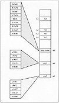
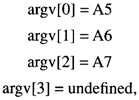
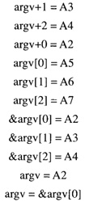
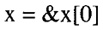
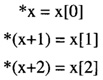
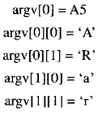

by Alan Parker
CRC Press, CRC Press LLC
ISBN: 0849371716 Pub Date: 08/01/93
|
|
Algorithms and Data Structures in C++
by Alan Parker CRC Press, CRC Press LLC ISBN: 0849371716 Pub Date: 08/01/93 |
| Previous | Table of Contents | Next |
Consider the simple program which prints out the runtime, arguments provided by the user. The program source is shown in Code List 3.4. The output of the program is shown in Code List 3.5. The program is executed by typing in the command
Code List 3.4 Double Pointer Example
Code List 3.5 Output of Program in Code List 3.4
The name of the program is ARGV1.EXE. The arguments passed to the program are arg1 and arg2. The main procedure receives two variables, argc and argv. For this case argc will be the integer 3 since there are 2 arguments passed to the program. It is 3 instead of 2 because argv will also hold the program name in addition to the arguments passed as can be seen in the program output. In the program argv is a pointer to a pointer to a character. The organization is shown in Figure 3.2. Looking at the figure one notes a rather complex organization. In the figure argv is stored at memory location Al. Its value is the address A2. The address A2 contains the address A5 which contains a contiguous set of characters. The first character at address A5 is the letter A (in hex 41, using ASCII). The character at address A5+1 is the letter R (in hex 52). The set of characters is terminated with a NULL character, (in hex 00). The null character indicates the end of the string. It is used by programs which are passed the address A5 to print the character. These programs print each consecutive character until they reach a NULL. A failure to place a NULL character at the end of a string will result in many string operation failures in addition to printing improperly. Remember in C/C++ a string is merely a collection of contiguous characters terminated in a NULL.
C and C++ can treat pointers as arrays. This is a very powerful and sometimes dangerous feature. For this example one can interpret

Figure 3.2 Program Organization in Memory

There are only two arguments + the program name.
Remember that argv is a pointer to a char to a char, written as char **.
argv[0] is a char * or a pointer to a char.
When the io function cout receives a char * it will interpret the characters at the location as a string. In this case during the first print loop argv[0] points to A5 where the string representing the name of the program resides (technically, the command line argument invoking the program).
Going to the location A5 cout proceeds to print out ARGV.EXE and stops printing characters because of the NULL character reached.
C and C++ also support pointer arithmetic. This can lead to complex expressions. For this example argv+1 is synonymous with &argv[1] which in this case one has

In C and C++ when you name an array like x[10] then x with no brackets refers to the address of x[0]:

One can traverse the pointers using * or [] that is the following is identical

Notice that

Make sure you understand all the outputs of the program. If you are going to spend a lot of time programming in C or C++ then you should review this chapter frequently until you are completely comfortable with the concepts.
C++ has introduced memory allocation operators new and delete to deal with requesting and freeing memory. An example of the use of new and delete are illustrated in Code List 3.6. The output of the program is shown in Code List 3.7. There are some important features of new and C++ illustrated in this program.
Code List 3.6 Dynamic Memory Allocation in C++
Code List 3.7 Output of Program in Code List 3.6
The program declares a class called test. Two variables k and j are declared as pointers to objects of type test. Upon declaration room is stored in memory for the pointers k and j.
A variable w of type test is created with the statement test w;. This statement illustrates the use of constructor functions in C++. When w is created the constructor function test() is called which results in “Constructor function called” being printed.
The statement j=new test[4]; requests memory for an array of size four for the class test. As a result of using new the constructor function is called four times. After the statement j will point to the first element.
The statement k = (test *) malloc(4*sizeof(test)); requests memory for an array of size 4 for the class test. Using malloc, however, will not call the constructor function for the class k. As a result nothing is printed at this point of the program.
The statement delete[] j; gives back the memory requested by the new operator earlier. The brackets [] are used when new is used to declare an array. At this point the destructor function ~test() is called for each element in the array.
The statement free(k) gives back the memory allocated by the malloc request. As with malloc, free will not call the destructor function.
Before the program terminates the variable local to main w will first lose its scope and as a result the destructor function will be called for w.
In C++ new and delete should be used in lieu of malloc and free to ensure the proper calling of constructor and destructor functions for the classes allocated. Notice that new also avoids the use of the sizeof operator which simplifies its use.
| Previous | Table of Contents | Next |
){kind=link}
){kind=link}
){kind=link}
){kind=link}
){kind=link}
){kind=link}
){kind=link}